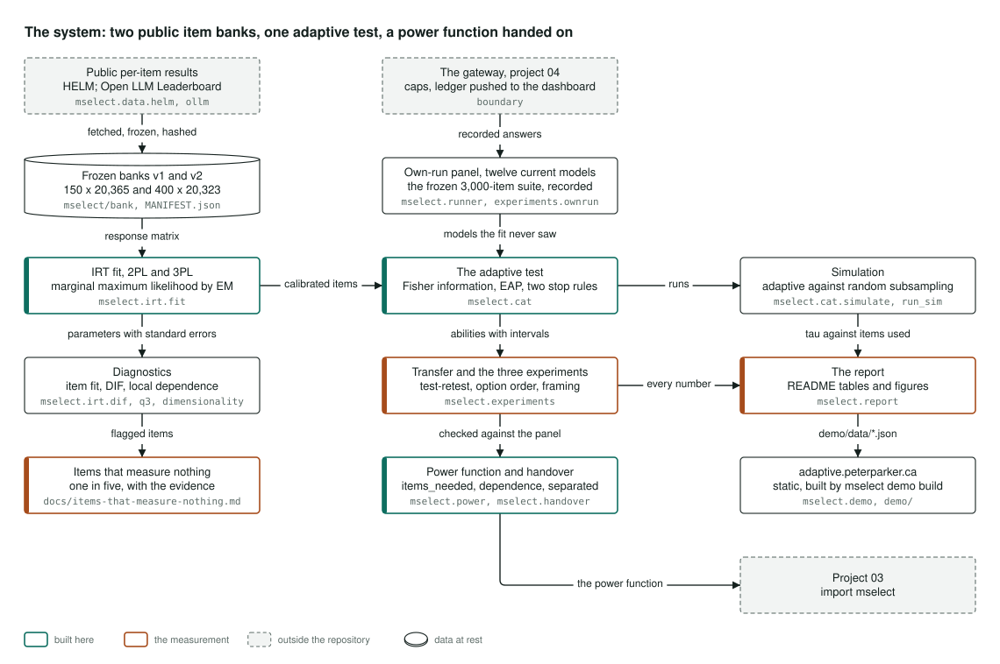
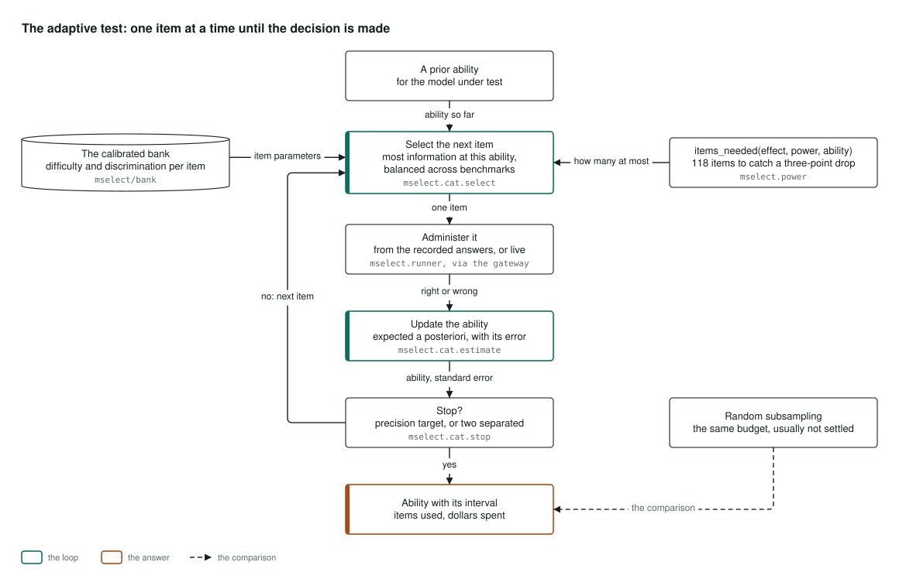
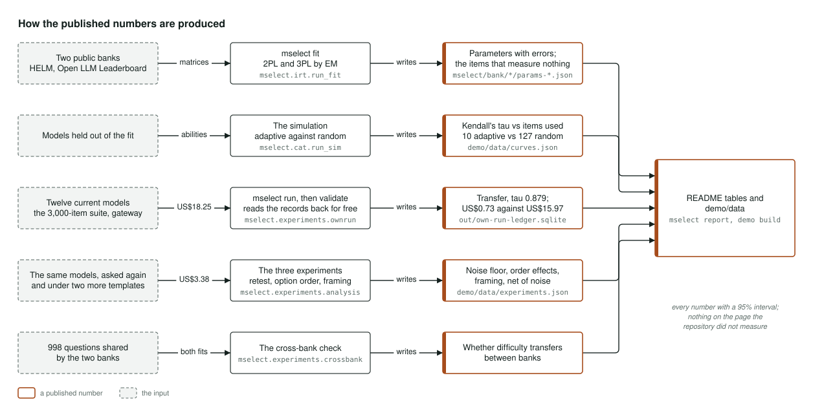

Architecture
How it's built
How the project is put together, in three pictures: the whole system, the adaptive test as a loop, and how each published number is produced. Select a diagram to open it full size.
The system

The diagram reads left to right: the question bank, the test, and what gets published.
The bank is built from public results. HELM and the Open LLM Leaderboard publish how each model did on each individual question, and those results are fetched, frozen and fingerprinted into two independent banks. Each bank is fitted with item response theory, the statistics behind standardised exams. That gives every question a difficulty and a measure of how sharply it separates stronger models from weaker ones, each with a standard error. Diagnostics then name the questions that measure nothing, with the evidence for each.
The test runs against real answers. Twelve current models were asked the frozen 3,000-question suite through the portfolio's gateway, which capped the spend and recorded every call. The adaptive test asks one question at a time and stops as soon as it knows enough. It runs against those recorded answers, so it is tested on models the fit never saw. Three experiments on the same models measure how much the answers change when you simply ask again, shuffle the options or reword the prompt. The power calculation, how many questions you need to catch a given drop, is the piece project 03 imports.
What gets published comes from the same stored files: the simulation of adaptive testing against random sampling, the report that writes the README's tables and figures, and the page at adaptive.peterparker.ca, which is five static files and a folder of JSON.
Where it lives: mselect.data, mselect.irt, mselect.runner, mselect.cat, mselect.experiments, mselect.power, mselect.handover, mselect.report and mselect.demo.
The adaptive test

This is what happens when you press Run the test on the demo.
The test starts from a neutral guess about the model's ability. It picks the question that would tell it the most at that ability, keeping a balance across the source benchmarks, and asks it. The answer comes from the recorded run, or from a live call through the gateway when one is wired in. After each answer the test updates its estimate of the model's ability, along with how uncertain that estimate still is.
It stops in one of two ways: when the estimate is precise enough, or when two models' ranges no longer overlap and the ranking is settled. Otherwise it picks the next question and goes round again.
Because the uncertainty is known at every step, you can also ask in advance how many questions a decision will need. A budget too small to catch the drop you care about shows up before the first paid call. The result is an ability with its interval, the questions used and the dollars spent. Asking the same number of questions at random is the comparison, and at ten questions random sampling usually has not settled the ranking.
Where it lives: mselect.cat.select, mselect.cat.estimate, mselect.cat.stop and mselect.runner.
How the published numbers are produced

Every number in the README comes from a stated input, through one command, into a stored file. This is how each one is made.
The fit writes each question's parameters and the list of broken questions from the two public banks. The simulation writes the curve of ranking accuracy against the number of questions asked, adaptive against random, on models held out of the fit.
The results on real models come from one paid run: the 3,000-question suite put to twelve current models through the gateway for US$18.25. Reading those records back costs nothing, and that is where the transfer result and the cost per ranking decision come from. The three experiments asked the same models again and added two prompt templates for US$3.38, so each template is judged against the noise measured under that same template. A cross-bank check asks whether a question's difficulty, calibrated on one panel of models, still means anything on the other, across the 998 questions the two banks share.
Finally, one command writes every number in the README and another writes the demo's data, both from those stored files, so nothing on the page can say anything the repository did not measure. Every number carries a 95% interval.
Where it lives: mselect.irt.run_fit, mselect.cat.run_sim, mselect.experiments.ownrun, mselect.experiments.analysis, mselect.experiments.crossbank, mselect.report and mselect.demo.